桌面端影视资产管理工具 · 面向个人创作者
做过两三个并行项目之后，你会发现一个尴尬的事实：最难管的不是创作本身，而是文件。
素材散落在各个角落——D盘的"参考"文件夹、微信传输助手、浏览器收藏夹、移动硬盘里的某个子目录。找一张三个月前存的角色参考图，翻来覆去要十五分钟。更离谱的是，有时候找文件靠的是翻企微聊天记录——"那个文件你发过我的，我搜一下聊天记录"——一个创作者的时间就这样耗在了找文件上。项目一多更混乱：这个镜头做到哪一步了？上一版分镜改了什么？合成阶段的最新版到底在不在？
中间这块空白，就是 CineFlow 想填的位置。一个不需要服务器配置、不需要团队培训、打开就能用的个人创作资产管理工具。
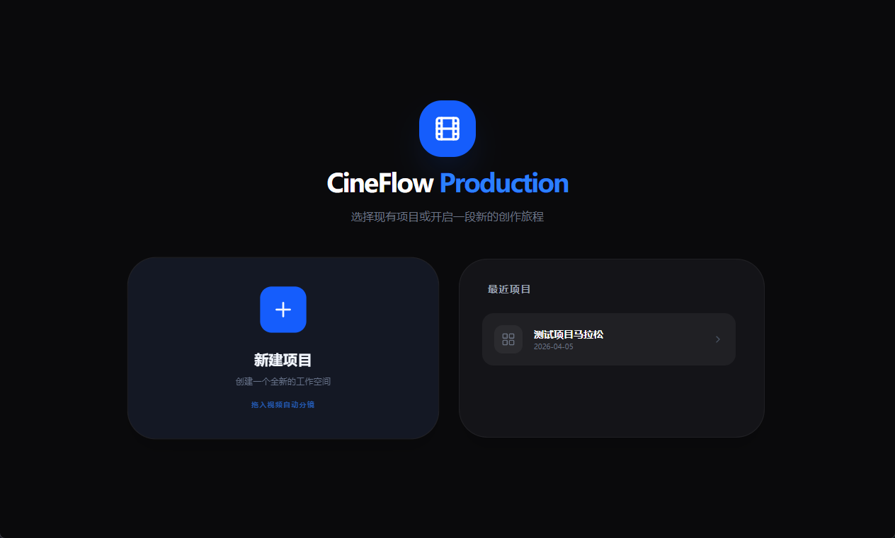
图 1 — 首页：新建项目 / 选择已有项目，或拖入文件自动分镜
把一段视频拖进 CineFlow，系统自动检测场景切换点，把视频按镜头切分开。确认后直接创建一个新项目，每个切出来的片段自动落入对应镜头的分镜阶段。从拿到原片到看到完整的镜头列表，中间没有手动打点、导出、建文件夹这些步骤。
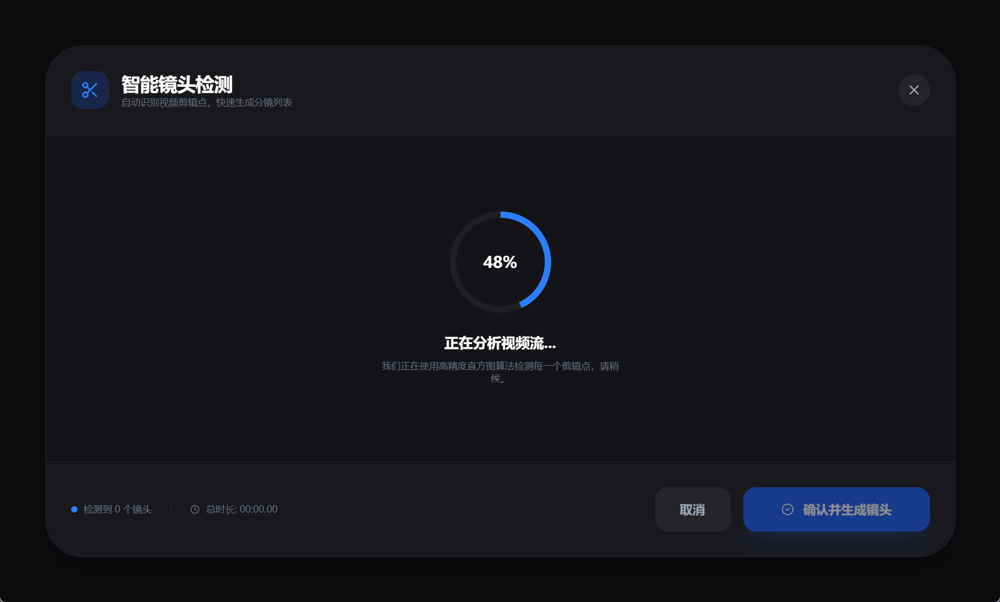
图 2 — 智能场景检测进行中，逐帧分析画面变化
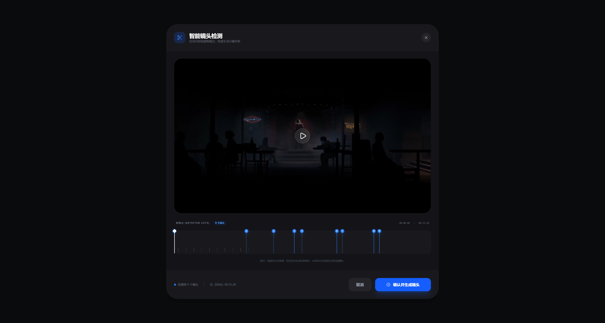
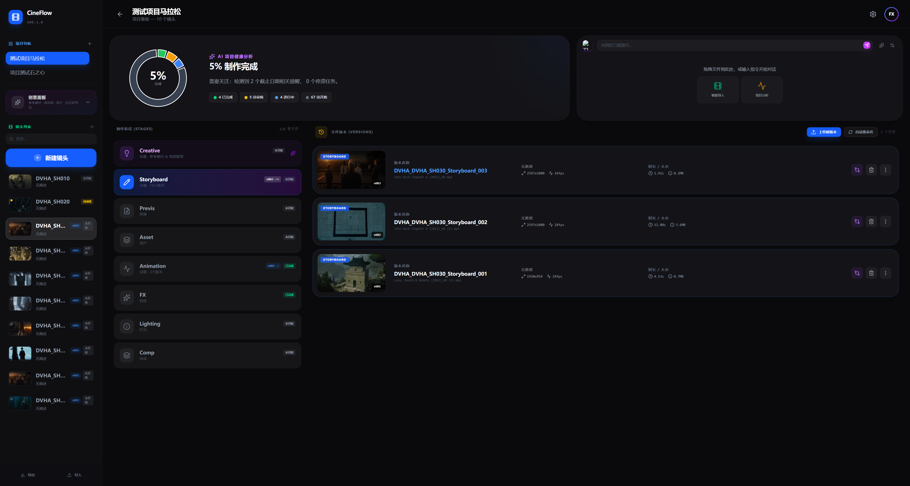
图 3—4 — 检测完成后的时间轴视图，可拖拽调整剪辑点
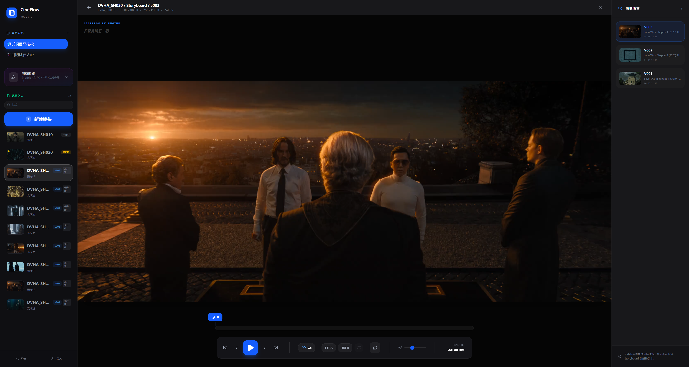
图 5 — 输入新项目名称后确认，自动创建项目并切分视频
每个项目的界面分为四个区域：
打开一个项目，当前进度一目了然。不用去猜哪个镜头卡住了，不用翻聊天记录确认"最新版是第几版"。
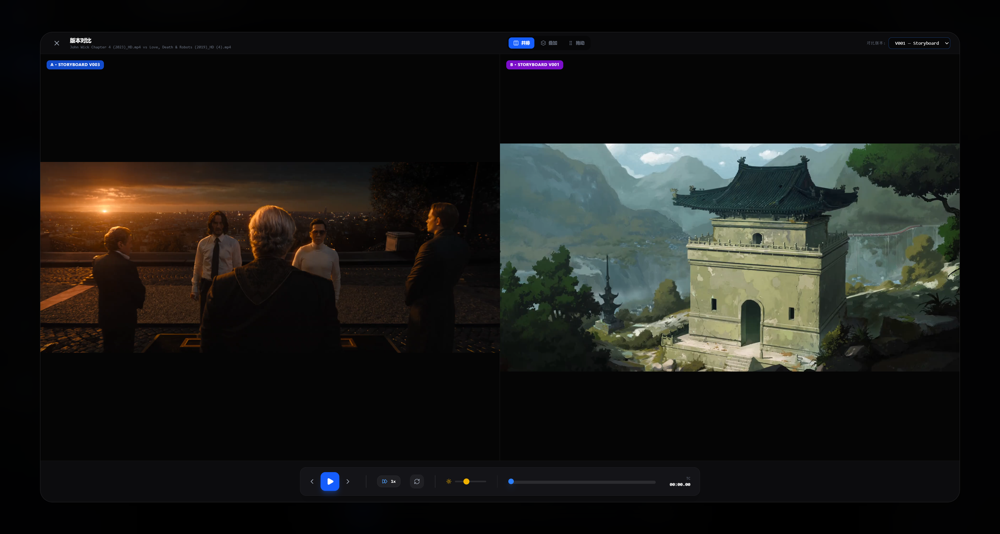
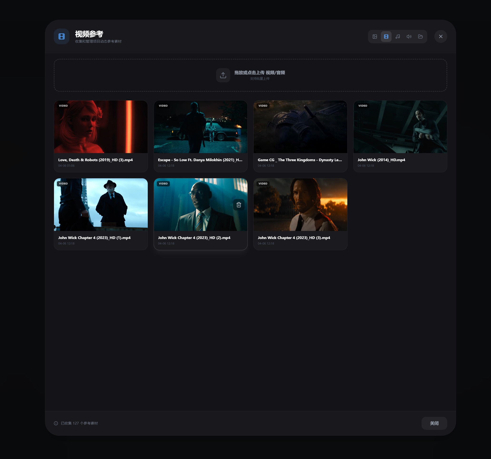
图 6—7 — 项目看板：9阶段导航 + AI健康度仪表盘 + 右侧版本文件列表
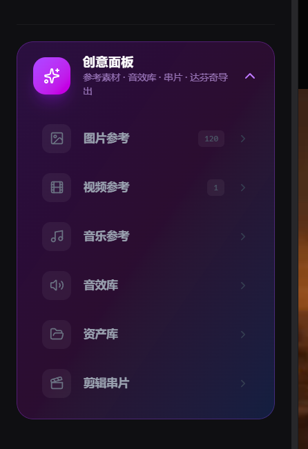
图 8 — 选中镜头后的视频播放预览（含版本切换）
CineFlow 内置了一个全局素材库，按六大类组织：图片参考、视频参考、音乐参考、音效、资产库、串片索引。支持单个文件拖入、ZIP批量解压导入，文件进来之后自动分类归档。跨项目也能引用——A项目存的参考图，B项目可以直接调用。
核心思路很简单：文件只存一次，需要时自己找得到。
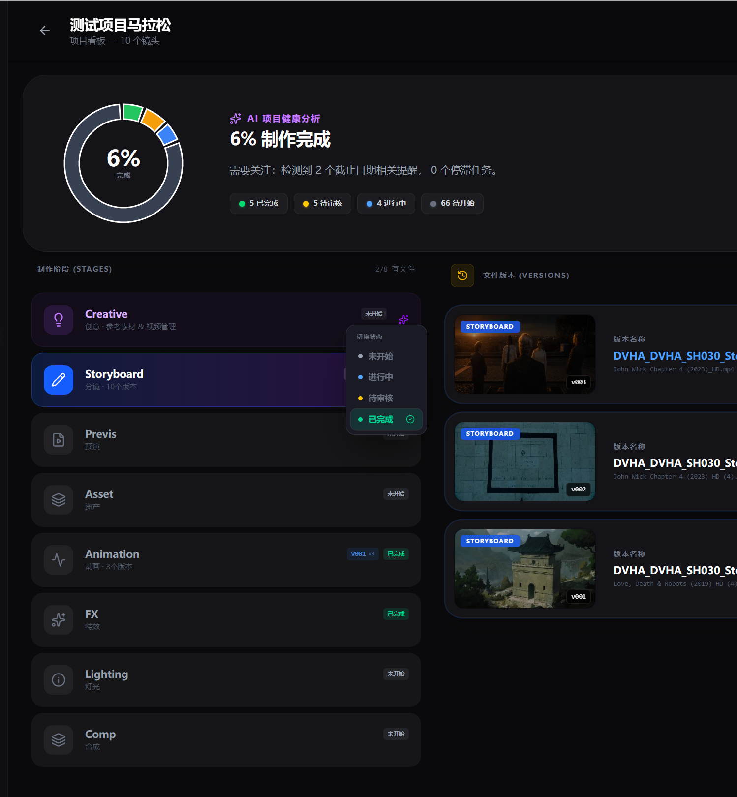
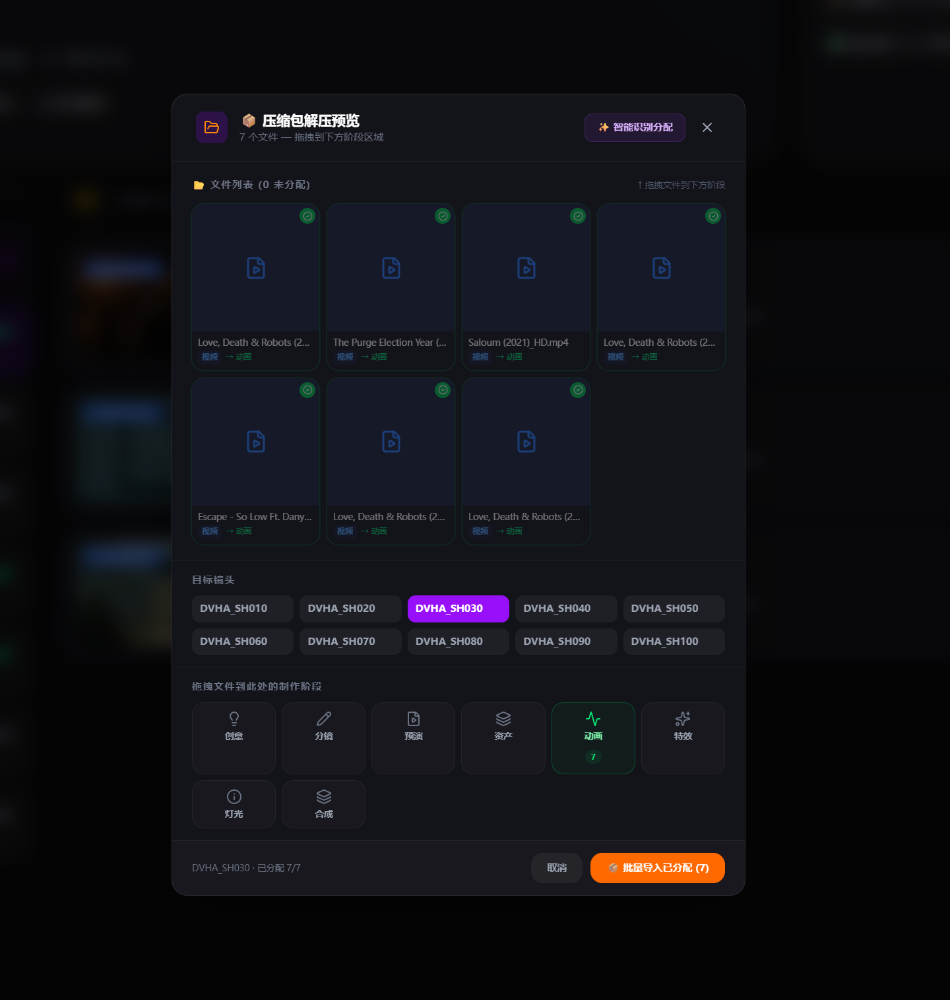
图 9—10 — 创意面板：六大素材分类入口 / 视频参考库网格浏览（已收录127条）
各镜头的版本准备好之后，可以在内置串片中按顺序播放，调整排序和出入点，快速拼出一个导演审阅版或客户汇报版。
同一镜头的不同版本之间支持分屏同步对比、叠加差异查看、画中画参照。迭代过程中"这版改了什么"不再靠肉眼反复切换来辨认。
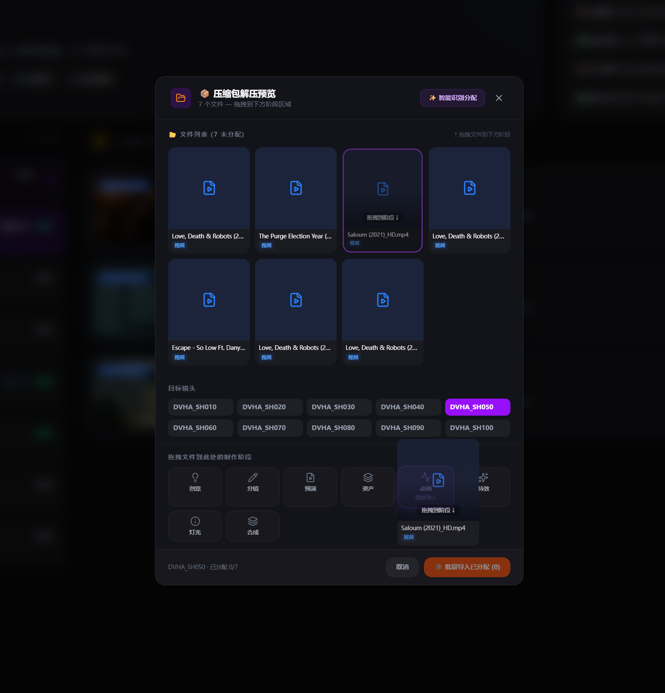
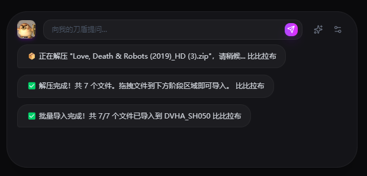
图 11—12 — 压缩包自动解压预览（可分配到指定镜头/阶段） / 刀盾AI对话式操作
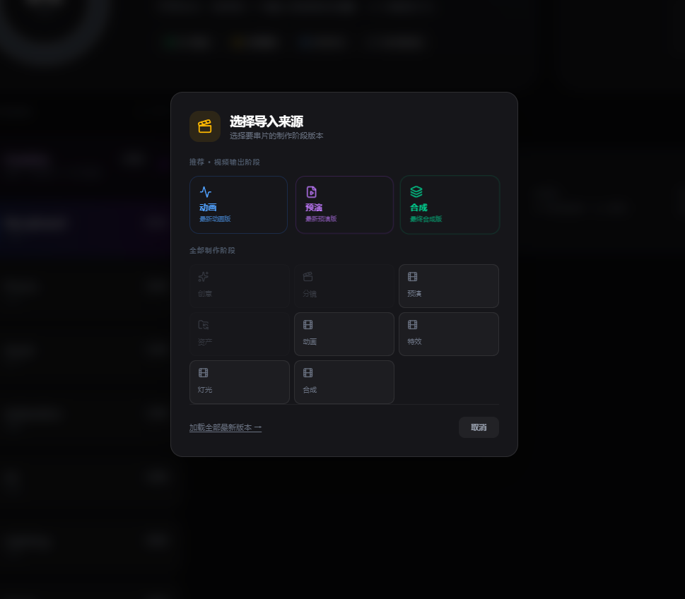
图 13—14 — 版本对比播放器（左右分屏同步） / 选择导入来源（推荐阶段/全部阶段）
CineFlow 目前是 v0.4.x 的半成品。上面描述的功能已经可以实际使用，但距离完整产品还有明显差距。以下是客观情况：
我们在半成品阶段就把这个东西拿出来，是因为核心链路已经跑通了——从导入到切分到看板到版本管理这条主线。与其闭门打磨到"完美"，不如让实际使用中的问题来决定下一步优先做什么。
如果你觉得手动导入文件还是太麻烦，可以交给 CineFlow 内置的"刀盾"——它支持拖入压缩包自动解压识别、批量分类导入。后续版本还会开放大模型 API 接入，你可以用自然语言跟素材库对话："帮我找出所有暖色调的参考图"、"把这套角色设定分配到项目B的资产阶段"。比比拉布。